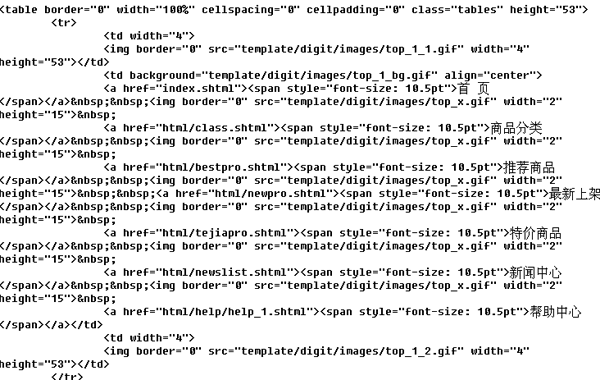
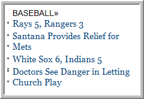
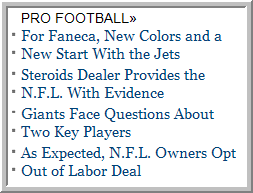
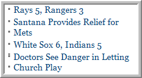

Principle and know-how of designing NPS template
Mastering the know-how of making NPS template and enhancing template’s commonality could dramatically reduce the whole website’s template amount and promote website’s maintainability. Moreover, desirable plan could considerably accelerate the whole website’s access speed. For example: the website of “bookuu bookstore” has diverse and massive content, however, its template amount is less than ten.
As long as mastering reasonable method and confirming to the following designing principle, you can easily make and manage website template.


Use DIV+CSS layout as much as possible
Comparing with table layout, DIV+CSS layout has less page code. Therefore, the loading speed get massively promoted, which is helpful for “spider” to crawl. Excessive page code could result in overtime crawling; hence spider would regard this page as unable to access. Embodiment and weighting will also affected.
The code length of table layout:

The code length of div+css layout:

Though it hasn’t been officially confirmed by search engine authority, Search engine generally won’t grab nested tables which have more than three layers. According to what we already know, “spider” will skip the nested content or directly abandon whole page when it come across multiply nested table. In order to reach certain visual effect, sometimes we have to apply multiple tables for “table” layout. If the nested table has key content while “spider” skip this content and didn’t grab the core of the page, the page will be a similar page. Excessive similar pages existing in website will negatively influence the ranking of website and the credibility of domain name.
Increase reusability
The key of reusability is to design and plan page template. The template reusability should be applied in conjunction with SHTML’s SSI command or JSP’s INCLUDE command. Taking full advantage of these two functions could increase template’s reusability.
- Take advantage of SHTML page’s INCLUDE command
-
Template is designed for content that full of change. The basically unchanged content can be directly placed into SHTML and uploaded by FTP. For example: it is unnecessary to make template files for page header and page footer because they are basically unchanged. On contrary, you can make a particular page file (i.e.: head.inc) which can be contained by other SHTML website page, thus page header and page footer can be massively modified if necessary.
<!--#include virtual="/head.inc"-->
Below will take the two topics of “domestic news” and “international news” in news.sina.com.cn as example to specify.
Generally, the two topics can be made into two page templates according to template partition plan. As showed below:
 
Actually, two page templates can be combined into one template. Below is the template partition plan:

We eliminate titles and other redundant options, and then write them into “index.shtml” files of home page. Meanwhile, the middle text content will be written into template. - Make full use of global tags
-
Global tags can be employed when outputting files from page template. Applying tags of <$top_url$> or <$top_path$> reasonably could dramatically reduce quantity of work.
Taking the two topics of “domestic news” and “international news” in news.sina.com.cn as example again, the output path of page template can be written as <$top_url$>/index_include.inc. Suppose these two topics are under top topic news (topic code is “new”) while the topic code for domestic news is “China” and for international news is “internation”, then it will generate “/news/china/index_include.inc” file and “/news/internation/index_include.inc” file. We just need to use “include” command in the relevant position of “index.shtml” to include it. For example:
<--#include virtual="/news/china/index_include.inc" -->
<--#include virtual="/news/internation/index_include.inc" -->
- Sensibly use RS tags
-
Generally, RS template tags are greatly used in page template. For RS tags, we advise to use less “topic” parameter so as to increase flexibility except reading particular topic.
Taking <rs id="rs1" topic="news.china"> as example,if it is modified as <rs id="rs1"> and the page template is added under the topics of domestic news and international news, then it will automatically read domestic news (news.china) or international news (news. internation) when publishing them.